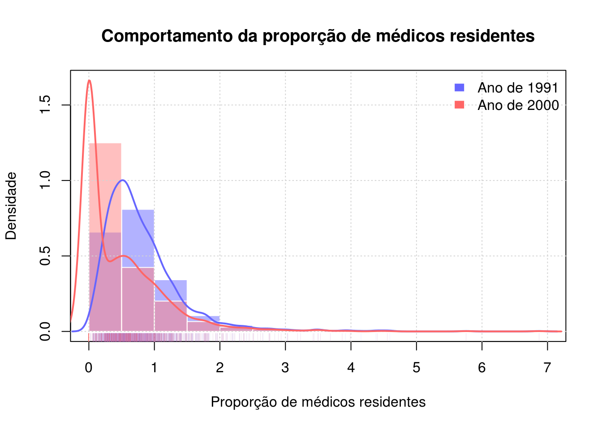

Conceito da linguagem e manipulação de objetos
- Download do arquivo R - rcourse02.R
Visualização de dados
Como construir gráficos
# Algumas funções para construir gráficos em R
apropos("plot$")## [1] "assocplot" "autoplot" "barplot"
## [4] "benchplot" "biplot" "boxplot"
## [7] "cdplot" "coplot" "draw_key_boxplot"
## [10] "draw_key_dotplot" "fourfoldplot" "geom_boxplot"
## [13] "geom_dotplot" "GeomBoxplot" "GeomDotplot"
## [16] "ggplot" "interaction.plot" "is.ggplot"
## [19] "lag.plot" "last_plot" "matplot"
## [22] "monthplot" "mosaicplot" "plot"
## [25] "preplot" "qplot" "qqplot"
## [28] "quickplot" "recordPlot" "replayPlot"
## [31] "savePlot" "screeplot" "spineplot"
## [34] "stat_boxplot" "StatBoxplot" "sunflowerplot"
## [37] "termplot" "ts.plot"apropos("chart$")## [1] "dotchart" "stripchart"# Parâmetros gráficos do pacote graphics
help(par)
# Uma demostração (impressione-se)
demo(graphics)O conjunto de dados
Para ilustrar o emprego da análise descritiva gráficos será utilizado o conjunto de dados visto na aula anterior, que diz respeito a proporção de médicos residentes por município do Brasil nos anos de 1991 e 2000 (veja a descrição dos dados no ipeadata). Abaixo carregamos o conjunto no R e verificamos sua estrutura.
# Lendo os dados
dados <- read.table(
"./data/medicos.csv", # o caminho para o .csv
header = TRUE, # tem cabeçalho
sep = ";", # Separador ;
dec = ",", # Decimais com ,
quote = "", # Nada define caracteres no .csv
skip = 1, # Pula a primeira linha
encoding = "UTF-8" # Codificação de caracteres uft-8
)
# Ajustes da leitura
dados <- dados[, c(-2, -6)]
colnames(dados) <- c("estado", "municipio", "med1", "med2")
# Verificando a estrutura
str(dados)## 'data.frame': 5596 obs. of 4 variables:
## $ estado : Factor w/ 27 levels "AC","AL","AM",..: 1 1 1 1 1 1 1 1 1 1 ...
## $ municipio: Factor w/ 5315 levels "Abadia de Goiás",..: 27 396 709 751 1022 1414 1603 1678 2499 2769 ...
## $ med1 : num 0 0 0 0 0 0.156 0 0 0 0 ...
## $ med2 : num 0 0 0.506 0 0 0.528 0 0 0 0 ...Variáveis qualitativas (univariada)
Neste conjunto de dados temos duas variáveis qualitativas (estado e municipio). A representação gráfica dessas variáveis é essencialmente com base em tabelas de frequências.
# Tabela de frequências por estado (número de municípios em cada estado)
xt_estado <- table(dados$estado)
xt_estado##
## AC AL AM AP BA CE DF ES GO MA MG MS MT PA PB PE PI PR
## 22 102 62 16 421 188 1 80 246 217 853 79 142 146 223 188 224 403
## RJ RN RO RR RS SC SE SP TO
## 94 167 52 15 499 296 75 646 139# Gráfico de barras
barplot(xt_estado)
# Gráfico de setores
pie(xt_estado)# Customizando o gráfico de barras
val <- sort(xt_estado)
bp <- barplot(val,
horiz = TRUE,
col = "darkturquoise",
las = 1,
xlim = extendrange(c(0, max(val))))
grid(ny = 0, col = "gray70", lty = 2)
text(x = val, y = bp, labels = val, adj = 0)
title(main = "Frequência de municípios no Brasil nos anos de 1991 e 2000",
xlab = "Número de municípios",
ylab = "Estado da federação")
Variáveis quantitativas (univariada)
Aqui a única variável quantitativa que temos é a proporção de médidos, qu está disposta em duas colunas que representam os anos de 1991 (med1) e 2000 (med2). A construção de gráficos para variáveis quantitativas é muito maior, pois há mais informação nessas variáveis.
# Há municípios cujo não temos os valores da proporção de médios em
# alguns dos anos de avaliação, esses casos serão descartados para
# construção dos gráficos
dados <- na.omit(dados)
str(dados)## 'data.frame': 5507 obs. of 4 variables:
## $ estado : Factor w/ 27 levels "AC","AL","AM",..: 1 1 1 1 1 1 1 1 1 1 ...
## $ municipio: Factor w/ 5315 levels "Abadia de Goiás",..: 27 396 709 751 1022 1414 1603 1678 2499 2769 ...
## $ med1 : num 0 0 0 0 0 0.156 0 0 0 0 ...
## $ med2 : num 0 0 0.506 0 0 0.528 0 0 0 0 ...
## - attr(*, "na.action")=Class 'omit' Named int [1:89] 63 243 437 620 621 622 623 758 809 810 ...
## .. ..- attr(*, "names")= chr [1:89] "63" "243" "437" "620" ...# Histograma
hist(dados$med1)
hist(dados$med2)
# Densidade
plot(density(dados$med1))
plot(density(dados$med2))
# Boxplot
boxplot(dados$med1)
boxplot(dados$med2)
# Traço dos valores (inútil neste exemplo)
plot(dados$med1)
plot(dados$med2)# Somente as observações com algum médico residente
tmed1 <- dados$med1[dados$med1 > 0]
tmed2 <- dados$med1[dados$med2 > 0]
##----------------------------------------------------------------------
## Um histograma mais elaborado
# Estimando a densidade
dens1 <- density(tmed1)
dens2 <- density(tmed2)
# Cores para os gráficos
col1 <- rgb(0.4, 0.4, 1)
col2 <- rgb(1, 0.4, 0.4)
# Exibindo graficamente
hist(tmed1,
ylim = c(0, max(c(dens1$y, dens2$y))),
probability = TRUE,
col = rgb(0.4, 0.4, 1, 0.5),
border = "white",
xlab = "Proporção de médicos residentes",
ylab = "Densidade",
main = "Comportamento da proporção de médicos residentes")
hist(tmed2,
probability = TRUE,
add = TRUE,
col = rgb(1, 0.5, 0.5, 0.5),
border = "white")
box()
grid()
# Incluindo as curvas de densidade
lines(dens1, col = col1, lwd = 2)
lines(dens2, col = col2, lwd = 2)
# Incluindo os valores das observações
rug(tmed1, col = rgb(0.4, 0.4, 1, 0.1))
rug(tmed2, col = rgb(1, 0.4, 0.4, 0.1))
# Incluindo a legenda
legend("topright",
legend = c("Ano de 1991", "Ano de 2000"),
fill = c(col1, col2),
bty = "n",
border = "white"
)
Análise bi ou multivariada
Chama-se aqui de análi gráfica bi ou multivariada aquela em que são exibidos mais de uma variável em um único gráfico, seja ela quantitativa ou qualitativa. Como exemplo temos interesse em verificar o comportamento da proporção de médicos residentes em cada estado.
# Médicos residentes em cada estado no ano de 1991 e 2000
plot(med1 ~ estado, data = dados)
plot(med2 ~ estado, data = dados)
# Relação dos médicos residentes entre os anos avaliados
plot(med2 ~ med1, data = dados)
abline(a = 0, b = 1)Informações da sessão
## R version 3.3.1 (2016-06-21)
## Platform: x86_64-pc-linux-gnu (64-bit)
## Running under: Ubuntu precise (12.04.5 LTS)
##
## locale:
## [1] LC_CTYPE=en_US.UTF-8 LC_NUMERIC=C
## [3] LC_TIME=en_US.UTF-8 LC_COLLATE=en_US.UTF-8
## [5] LC_MONETARY=en_US.UTF-8 LC_MESSAGES=en_US.UTF-8
## [7] LC_PAPER=en_US.UTF-8 LC_NAME=C
## [9] LC_ADDRESS=C LC_TELEPHONE=C
## [11] LC_MEASUREMENT=en_US.UTF-8 LC_IDENTIFICATION=C
##
## attached base packages:
## [1] grid stats graphics grDevices utils datasets base
##
## other attached packages:
## [1] gridExtra_2.2.1 ggplot2_2.2.0 knitr_1.15.1
##
## loaded via a namespace (and not attached):
## [1] Rcpp_0.12.8 revealjs_0.7 assertthat_0.1 digest_0.6.10
## [5] rprojroot_1.1 plyr_1.8.4 gtable_0.2.0 backports_1.0.4
## [9] magrittr_1.5 evaluate_0.10 scales_0.4.1 highr_0.6
## [13] stringi_1.1.2 lazyeval_0.2.0 rmarkdown_1.2 labeling_0.3
## [17] tools_3.3.1 stringr_1.1.0 munsell_0.4.3 yaml_2.1.14
## [21] colorspace_1.3-1 htmltools_0.3.5 tibble_1.2 methods_3.3.1